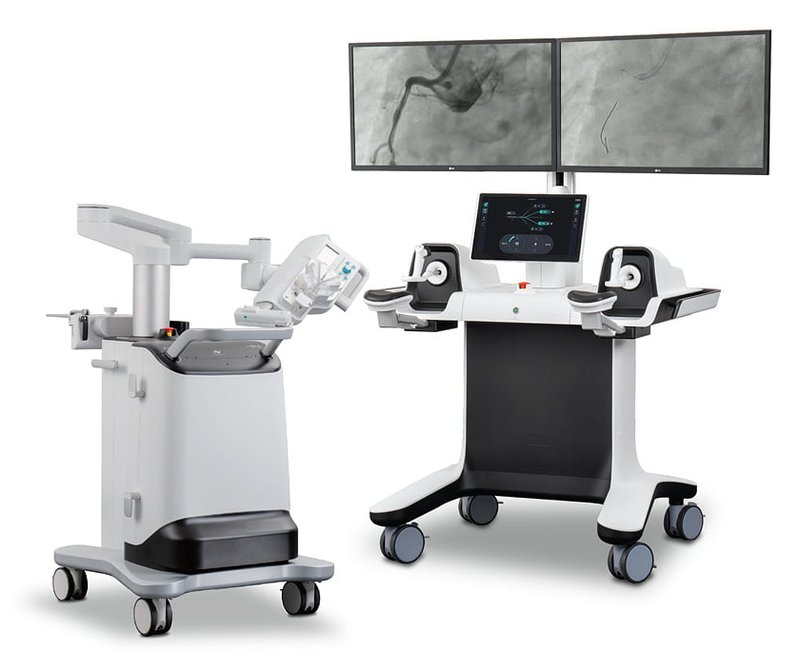

Commercial and clinical-stage systems · aviar_lnrobotics2018
AVIAR 2.0

1 / 3


- Family
- Commercial and clinical-stage systems (commercial)
- Devices
- multi-channel: guiding catheter fixed, guidewire, balloon/stent catheter via roller block
- Degrees of freedom
- N.R.
- Push
- Friction rollers
- Twist
- Rolling between rollers
- Tested up to
- Human
- Sim-to-real
- None found — No simulation-trained controller found for this robot.
Testing
- Highest level
- Human
- What was tested
- 20 pts, multicentre (lee2025_safety)
- Key numbers
- technical and clinical success 100%; robotic time 23:06+-05:55 min; operator dose -84% (lee2025_safety abstract)
Mechanism
- Push (translation)
- friction-roller
- Twist (rotation)
- roller block (translation + rotation)
- Device range
- N.R.
- Target anatomy
- coronary
Sensing and interface
- Force sensing
- N.R.
- Leader and haptics
- yes (haptic manipulator with control wheel + joystick)
- Imaging
- robotic positioning arm + IDU
- Sterility
- N.R.
Size
- Footprint (mm)
- N.R.
- Mass (kg)
- N.R.
Simulation
- Simulation model
- none found
- Sim-trained controller
- none found
Versions
- Lineage
- AVIAR; AVIAR 2.0 (MFDS 2023)
Sources
- Safety and Feasibility of Robot-Assisted Percutaneous Coronary Intervention Using the AVIAR 2.0 System: A Prospective, Multi-Center, Single-Arm, Open, Investigator-Initiated, Post-Approval Clinical Trial · Korean Circulation Journal, 2025 · doi:10.4070/kcj.2024.0226 [lee2025_safety]
Notes
- Notes
- MFDS approval 2023 as stated by lee2025_safety.
This record
- Read level
- full — full text on disk
- Picture
- https://img.hankyung.com/photo/202606/AD.44819292.1.jpg (Hankyung Magazine article on LN Robotics, https://magazine.hankyung.com/job-joy/article/202606271488d) ↗ — licence: press image (LN Robotics product photo in news article); grade B
- Picture changes
- cropped (68,68)-(908,773) of 1000x826; not upscaled; no tone change; no erasing
- Found by
- commercial: Search of commercial and clinical-stage systems.
- Data
- JSON · YAML:
records/robots/aviar_lnrobotics2018.yaml - Correction
- Suggest a correction [repository not created yet]